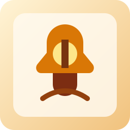
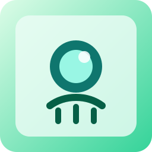

프로필 상세
레벨, 경험치, 현재 직업, 대표 호칭, 오늘 기록을 이 유저 기준으로만 표시합니다.
- 유저 분석표
- 직업 · 호칭
- 탑 진행과 유물
꼬모 개인 프로필
이 페이지는 해당 유저의 프로필 열람 전용입니다. 프로필 상세, 유저 분석표, 현재 직업과 호칭, 대표 유물과 유물 도감, 그리고 영단어·수학공식·과학공식·사자성어 메모장 현황을 한 화면에서 정리합니다.
열람 기준
레벨, 경험치, 현재 직업, 대표 호칭, 오늘 기록을 이 유저 기준으로만 표시합니다.
영단어, 수학공식, 과학공식, 사자성어 저장 수를 이 유저 기준으로만 보여줍니다.
Profile
레벨, 경험치, 현재 직업, 대표 호칭, 오늘 기록을 한 번에 보여줍니다.
Analysis
과목별 XP를 한 줄로 정리해 지금 무엇을 밀고 있는지 바로 읽히게 만듭니다.
Identity
직업은 학습 빌드, 호칭은 누적 업적입니다. 둘을 분리해서 보여줍니다.
Memo
영단어, 수학공식, 과학공식, 사자성어 저장 수를 랜딩에서 바로 확인합니다.
Tower
유물은 오직 도전의 탑에서, 그리고 2인 이상이 실제 참여한 방에서만 획득됩니다.

영어 유물
영어 개념과 어휘 공략을 밝히는 등잔이에요.
2명 이상 방에서 영어 축 도전의 탑 등반 기여 시 해금수학 유물
식과 풀이의 방향을 정리해 주는 나침반이에요.
2명 이상 방에서 수학 축 도전의 탑 등반 기여 시 해금
과학 유물
관찰 기록을 모아 탑 공략을 돕는 구체예요.
2명 이상 방에서 과학 축 도전의 탑 등반 기여 시 해금국어 유물
읽기와 표현의 흐름을 남기는 인장이에요.
2명 이상 방에서 국어 축 도전의 탑 등반 기여 시 해금Memo Loop
개념 질문 후 어휘 저장, 다시 랜딩으로 복귀
풀이 흐름을 저장하고 직업 성장과 연결
관찰 포인트를 정리하고 공략 기록으로 이어짐
문해 축 저장과 국어 유물 해금 흐름을 묶음